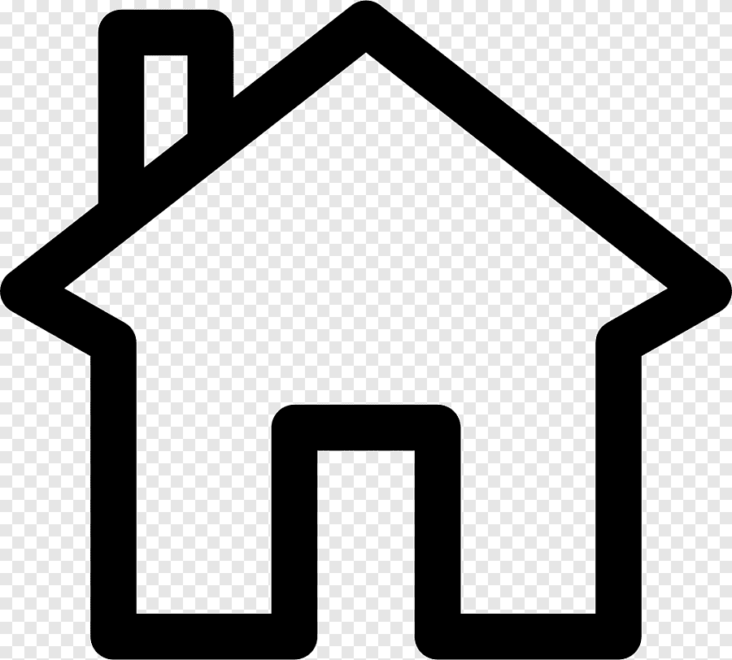

Nom:amal
Prénom:somrani
Date de naissance:26/09/1990
Carte d'identité:07932132
L'état civil:mariée
Baccolauréat en science de la vie et de la terre
Licence appliquée en physique des matériaux en FSB
Master professinnel en génie climatique et maitrise de l'énergie en FSB
stage 3 mois projet fin d'etude en INOPLAST pour identifier l'état physique des différentes matiéres premiére utiliser en palstique
6 mois projet fin d'étude master au sein d'un bureau d'étude pour réaliser une audite énergétique d'un usine
bien: écrit,parler,lu
moyenne: écrit,parler,lu
débutante